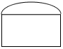

|
Home >> Data Flow Diagrams
Contents
Purpose:
To capture the processes of a system in a top/down manner.
Back to top
|
Symbol
|
Description
|
|

|
Process
|
|
|
External
|
|
|
Data File
|
|
|
Flow of Data
|
Back to top
- Various levels of detail aid in communication with different interest groups.
- The top/down approach often secures management endorsement.
Back to top
- Capabilities are lost between diagrams
- Systemic myth and rhetoric are easily captured and stored
Back to top
- Processes must have input and output.
- All symbols must have unique labels.
- Data must flow in only one direction.
- No recursion.
- Processes and External Entities must be numbered.
- There must be a process between:
- files
- external entities
- file and external entities
- Data flows must remain the same to all destinations
- Joined data flows must be equal.
Back to top
Consider the case register system of a fast food restaraunt:
Back to top
|